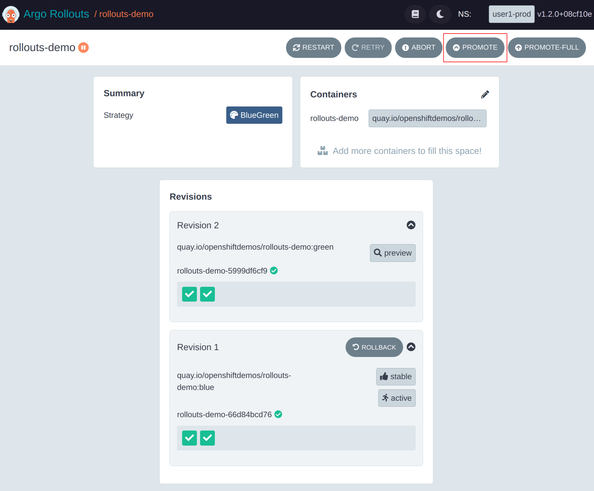

Blue-Green Rollout
In this module we will:
-
Review and understand the Blue-Green Strategy
-
Deploy the Blue-Green Rollout to the production namespace
-
Deploy a new image and observe the Rollout promotion process
-
Perform a Rollback of a promotion
Blue-Green Strategy
In a blue-green deployment we deploy a new version of the application in a separate stack from the current version with the two versions running in parallel for a period of time. This enables testing on the new version while users continue to access the current version of the application until a cut-over of traffic occurs.
The diagram below illustrates this process over time.

In traditional infrastructure this approach can be very challenging. While Kubernetes is simpler due to it’s declarative nature the process still tends to be cumbersome to manage since bespoke automation needs to be created to manage the separate stacks, testing and traffic management between versions.
This is where Argo Rollouts comes in, it greatly reduces the complexity by providing these capabilities with a simple, declarative approach. In this module we will deploy a simple blue-green Rollout and explore it’s basic capabilities.
Deploy Blue-Green Rollout
Here we will deploy the blue-green rollout in the user%USERNUM%-prod namespace following the same process that we did for the Deployment in the previous module. Prior to starting,
confirm you are still at the correct path.
cd ~/argo-rollouts-workshop/documentation/modules/ROOT/examples/Next, let’s explore the manifests that we will be deploying in the ./bluegreen/base folder:
ls ./bluegreen/baseNotice that this time we have files for rollout.yaml, services.yaml and routes.yaml which represent our Rollout, Services and Routes. We also have
kustomization.yaml as per the last module.
apiVersion: argoproj.io/v1alpha1
kind: Rollout
metadata:
name: rollouts-demo
spec:
replicas: 2
revisionHistoryLimit: 10
selector:
matchLabels:
app: rollouts-demo
template:
metadata:
labels:
app: rollouts-demo
spec:
containers:
- name: rollouts-demo
image: quay.io/openshiftdemos/rollouts-demo:blue
imagePullPolicy: IfNotPresent
ports:
- containerPort: 8080
strategy:
blueGreen:
activeService: active
previewService: preview
autoPromotionEnabled: falseThe structure of the Rollout is quite similar to the Deployment, it still uses the standard
Kubernetes PodTemplate but note that
under .spec.strategy we have specified the blueGreen strategy. The Kubernetes Deployment object supports rollout
and replace strategies whereas Argo Rollouts supports blueGreen and canary strategies.
Under the blueGreen strategy we have identified the active and preview Kubernetes services for the rollout which will be covered
in more detail when services are discussed next.
As well as services the field autoPromotionEnabled is set to false which means the rollout will require manual intervention to promote. Manual promotion
is enabled so the behavior of the rollout can be observed in-depth in subsequent sections of this module.
The Argo Rollouts documentation provides a complete list of all of the configurable features for the blueGreen strategy and some of these additional features will be explored as we progress through the workshop.
apiVersion: v1
kind: Service
metadata:
labels:
app: rollouts-demo
name: active
spec:
ports:
- port: 8080
protocol: TCP
targetPort: 8080
name: http
selector:
app: rollouts-demo
---
apiVersion: v1
kind: Service
metadata:
labels:
app: rollouts-demo
name: preview
spec:
ports:
- port: 8080
protocol: TCP
targetPort: 8080
name: http
selector:
app: rollouts-demoIn the services manifest we define two services, an active service and a preview service. The active service is the service that users of the application will be interacting with, the preview service will be used to access the new version of the application for testing purposes.
As per the documentation,
Argo Rollouts automatically manages the traffic between the services by managing the .spec.selector. In a nutshell, Argo Rollouts
will add a unique identifier label to pods and then update the selector in the service to bind the right pods to the right service. As
we deploy the rollout this will be reviewed in more detail.
apiVersion: route.openshift.io/v1
kind: Route
metadata:
name: active
spec:
port:
targetPort: http
tls:
insecureEdgeTerminationPolicy: Redirect
termination: edge
to:
kind: Service
name: active
---
apiVersion: route.openshift.io/v1
kind: Route
metadata:
name: preview
spec:
port:
targetPort: http
tls:
insecureEdgeTerminationPolicy: Redirect
termination: edge
to:
kind: Service
name: previewFinally we have two Route objects, one for active and one for preview, each tied to their respective service.
To deploy the blue-green rollout, use the following command to process the kustomization:
oc apply -k ./bluegreen/base -n user%USERNUM%-prodOnce you have run the command we can confirm that the rollout has deployed successfully. Use the following command to ensure that the pods are up and running:
oc get pods -l app=rollouts-demo -n user%USERNUM%-prod
We are getting pods using the label app=rollouts-demo to specifically select pods from the rollout, remember
the RolloutManager pod is also deployed in the user%USERNUM%-prod namespace. Using the label enables us
to exclude that pod.
|
The console should return something along the lines of:
NAME READY STATUS RESTARTS AGE
rollouts-demo-66d84bcd76-pxtnc 1/1 Running 0 64s
rollouts-demo-66d84bcd76-q49wt 1/1 Running 0 64sThere are two pods since the Rollout application specified two replicas.
Next retrieve the Routes for this application. It’s in the user%USERNUM%-prod Project.
oc get routes -n user%USERNUM%-prodNAME HOST/PORT PATH SERVICES PORT TERMINATION WILDCARD
active active-user%USERNUM%-prod.apps.cluster-nh5nw.nh5nw.sandbox2534.opentlc.com active http edge/Redirect None
preview preview-user%USERNUM%-prod.apps.cluster-nh5nw.nh5nw.sandbox2534.opentlc.com preview http edge/Redirect NoneCopy the value of the HOST/PORT of each route into an individual browser tab to confirm that both display the application with blue squares.
Next let’s examine the active and preview services that were deployed, run the following command to see the active service.
oc get svc active -o yaml -n user%USERNUM%-prod | oc neatThe console should display a service definition similar to the following:
apiVersion: v1
kind: Service
metadata:
annotations:
argo-rollouts.argoproj.io/managed-by-rollouts: rollouts-demo
labels:
app: rollouts-demo
name: active
namespace: user%USERNUM%-prod
spec:
clusterIP: 172.30.104.238
clusterIPs:
- 172.30.104.238
internalTrafficPolicy: Cluster
ipFamilies:
- IPv4
ipFamilyPolicy: SingleStack
ports:
- name: http
port: 8080
selector:
app: rollouts-demo
rollouts-pod-template-hash: 66d84bcd76Notice that the selector now has an additional key, rollouts-pod-template-hash, with a hashed value. This is how the rollout manages traffic
between the active and preview versions. Since we have not deployed a new image, if you check the preview service you will see the same
selector used there as well.
Similar to Kubernetes deployments, each revision, i.e. version, of the Rollout is backed by a ReplicaSet.
This ReplicaSet will have a rollouts-pod-template-hash label in it’s PodTemplate with a value unique to the revision. Argo Rollouts will automatically ensure that
the selector in the service is pointing to the appropriate revision.
To view this, output the manifest for the currently deployed ReplicaSet:
oc get rs -l app=rollouts-demo -n user%USERNUM%-prod -o yaml | oc neatNote the rollouts-pod-template-hash in spec.template.metadata.labels field in the ReplicaSet.
Argo Rollouts CLI
Argo Rollouts provides a Command Line Interface (CLI) to support working with rollouts as a kubectl plugin. Instructions for installing the plugin are available however this has already been done for you in this workshop.
The plugin is well documented and provides a number of commands and these can be used with our currently deployed rollout.
To view a list of rollouts we can use the list command as follows:
oc argo rollouts list rollout -n user%USERNUM%-prodThis will display output as follows:
NAME STRATEGY STATUS STEP SET-WEIGHT READY DESIRED UP-TO-DATE AVAILABLE
rollouts-demo BlueGreen Healthy - - 2/2 2 2 2To view detailed information about rollout that was listed, use the get command:
oc argo rollouts get rollout rollouts-demo -n user%USERNUM%-prodThis command should output something similar to the following:
Name: rollouts-demo
Namespace: user%USERNUM%-prod
Status: ✔ Healthy
Strategy: BlueGreen
Images: quay.io/openshiftdemos/rollouts-demo:blue (stable, active)
Replicas:
Desired: 2
Current: 2
Updated: 2
Ready: 2
Available: 2
NAME KIND STATUS AGE INFO
⟳ rollouts-demo Rollout ✔ Healthy 6m46s
└──# revision:1
└──⧉ rollouts-demo-66d84bcd76 ReplicaSet ✔ Healthy 6m46s stable,active
├──□ rollouts-demo-66d84bcd76-dxv4x Pod ✔ Running 6m46s ready:1/1
└──□ rollouts-demo-66d84bcd76-k67q4 Pod ✔ Running 6m46s ready:1/1With this command we can view the status of the rollout, Healthy in this case (hopefully!), as well as
the ReplicaSets and Pods that are associated with the rollout. Notice that the ReplicaSet and Pod names
include the rollouts-pod-template-hash that was shown earlier.
To view the status of the rollout by itself you can use the following command:
oc argo rollouts status rollouts-demo -n user%USERNUM%-prodThis should return a simple Healthy in the output.
Similar to kubectl rollout status for Deployments, the status command
will block when the rollout is in a paused state which can be useful when used with
automation where you need to wait until it has finished rolling out (pun intended).
Other commands are available to perform actions on the rollout such as a promoting
a rollout, aborting a rollout, etc. A complete list of commands can be viewed with
the --help switch and we will look at some of them during the course of this workshop.
Argo Rollouts Dashboard
The Argo Rollouts dashboard has been deployed for you already in the user%USERNUM%-tools namespace
on the cluster for this workshop. To access the dashboard, run the following command to get the
URL for the dashboard for your specific user:
oc get route -n user%USERNUM%-tools dashboard -o jsonpath='{"https://"}{.spec.host}{"\n"}'Copy the returned URL into a browser tab to access the dashboard.
| The Argo Rollouts Dashboard is intended to be run on the developer’s local machine and as a result it does not support authentication or multi-tenancy. For convenience and simplicity it has been deployed on cluster for each user but this is not recommended as a general practice. |
In the dashboard each rollout will show in it’s own tile on the overview screen. The tile will provide some basic information about the rollout as shown here:

Clicking on the tile will display a detailed view of the rollout as well as additional actions that are available for interacting with the rollout.

Promote Image
In this section we will promote a new image and observe the behavior of the application during the promotion process. To promote the image we will use a simple pipeline to update the image reference to use a different color.
To access this pipeline, in the OpenShift Console navigate to the user%USERNUM%-tools namespace and select
the Pipelines view in the Developer perspective as per this screenshot.

Clicking on the pipeline name, rollouts-pipeline, will bring you to the following view:
As shown in the image, the pipeline consists of two tasks, deploy-dev will update and deploy the selected image in the
Kubernetes Deployment in the user%USERNUM%-dev namespace while deploy-prod will do the same for the Rollout in the
user%USERNUM%-prod namespace.
| This pipeline is not meant to be a comprehensive example of how to manage image promotion, rather we are using it provide a simple way in the workshop to drive image changes. This pipeline uses OpenShift Pipelines however any Continuous Integration(CI) tool can be used with Argo Rollouts including Argo Workflows, GitHub Actions, GitLab, etc. |
To start the pipeline, click the Actions dropdown and select the Start option:

This will show a dialog prompting for an image color, by default this will be blue however since blue is already
deployed let’s select a different image color and go with green:

Once Start is pressed, the pipeline will begin to execute. Wait until the pipeline has completed and is showing
green check marks which signifies successful completion.

Let’s validate that the change occurred in our development environment. As per the last module, the URL for the application in Development can be retrieved with the following command:
oc get route -n user%USERNUM%-dev rollouts-demo -o jsonpath='{"https://"}{.spec.host}{"\n"}'Paste this url into a browser tab and confirm that the application is showing Green squares reflective of the green image that we deployed.

Now let’s see what the application looks like in production where we are using Rollouts. First, let’s check the preview service by retrieving it’s URL and viewing it in the browser:
oc get route -n user%USERNUM%-prod preview -o jsonpath='{"https://"}{.spec.host}{"\n"}'Again the application will display green squares, now let’s check the active service:
oc get route -n user%USERNUM%-prod active -o jsonpath='{"https://"}{.spec.host}{"\n"}'Notice that the application is displaying blue squares. Since the rollout is using manual promotion, live users are still seeing the previous version of the application leaving the preview version, with the new version, available for testing.
We can see how the rollout is managing the different revisions across ReplicaSets by using the Argo Rollouts CLI. Execute the following command:
oc argo rollouts get rollout rollouts-demo -n user%USERNUM%-prodThis should return the following output:
Name: rollouts-demo
Namespace: user%USERNUM%-prod
Status: ॥ Paused
Message: BlueGreenPause
Strategy: BlueGreen
Images: quay.io/openshiftdemos/rollouts-demo:blue (stable, active)
quay.io/openshiftdemos/rollouts-demo:green (preview)
Replicas:
Desired: 2
Current: 4
Updated: 2
Ready: 2
Available: 2
NAME KIND STATUS AGE INFO
⟳ rollouts-demo Rollout ॥ Paused 17m
├──# revision:2
│ └──⧉ rollouts-demo-5999df6cf9 ReplicaSet ✔ Healthy 41s preview
│ ├──□ rollouts-demo-5999df6cf9-q4kxg Pod ✔ Running 41s ready:1/1
│ └──□ rollouts-demo-5999df6cf9-t2hsd Pod ✔ Running 41s ready:1/1
└──# revision:1
└──⧉ rollouts-demo-66d84bcd76 ReplicaSet ✔ Healthy 17m stable,active
├──□ rollouts-demo-66d84bcd76-dxv4x Pod ✔ Running 17m ready:1/1
└──□ rollouts-demo-66d84bcd76-k67q4 Pod ✔ Running 17m ready:1/1Notice that the status is Paused and that we now have two ReplicaSets, one for the preview service
and one for the active (i.e. stable) service.
Now navigate to the Argo Rollouts Dashboard and view the details of the application. Notice that the application displays the same two revisions that were presented in the CLI:

The dashboard shows that the newest revision is using the green image and is tied to the Preview
service whereas the Active service, which is considered Stable, is associated with the previous revision using the blue image.
To perform the promotion, you can either use the dashboard or the CLI to do it:
-
For the CLI, execute the following command to perform the promotion:
oc argo rollouts promote rollouts-demo -n user%USERNUM%-prod -
For the UI, click the
Promotebutton in the Dashboard, it will change to an orangeSure?button to ask for confirmation so click it again to confirm.
Once the promotion has been completed, you should see that the Active service is now associated with the green image and is marked
as Stable. The pods in the older revision will automatically be scaled down to 0 after 30 seconds. This is determined by
the scaledowndelayseconds
parameter.
If you check the Active route the application is now displaying green squares.
oc get route -n user%USERNUM%-prod active -o jsonpath='{"https://"}{.spec.host}{"\n"}'Enable Auto-Promotion
Now that a manual promotion of rollout has been performed, let’s proceed to enable the auto promotion feature. To do so, execute
the following command to patch the rollout to set autoPromotionEnabled to true:
oc patch rollout rollouts-demo --type='json' -p='[{"op": "replace", "path": "/spec/strategy/blueGreen/autoPromotionEnabled", "value":true}]' -n user%USERNUM%-prodNow deploy a new image color yellow this time, in the OpenShift console navigate to the Pipeline again in the user%USERNUM%-tools namespace.
Click on the pipeline, select the Actions menu and select Start. When the dialog appears enter the color yellow this time.
Press the start button and wait for the pipeline to complete as per last time. Now go back to the Argo Rollouts Dashboard and note that there is a new revision using the Yellow image associated with the Active service.
While not requiring manual intervention is great, it would be wonderful if there was a way to perform automated testing to ensure the validity of the new revision before Rollouts makes it available to users. Fortunately Rollouts can do this with the Analysis feature which will be covered in the next module.
Perform Rollback
We have deployed our application with the color yellow but disaster! Our users really dislike yellow for some reason and insist that we switch back to the green color while we work to determine an acceptable shade of yellow for users.
To accomplish this we will perform a rollback to the green version. This can be done either in the dashboard or in the CLI but here we will show the CLI way of doing it.
To execute the rollback, first we need to determine the revision to rollback to. Looking at the dashboard we can see that
the green image is associated with Revision 2 (assuming you did not need to do multiple deployments due to problems).
To rollback the revision the undo command can be used, execute the following command:
oc argo rollouts undo rollouts-demo --to-revision=2 -n user%USERNUM%-prod
An info message will appear when running the command, unknown field `spec.template.metadata.creationTimestamp`, this can be ignored.
|
Once this command is run, if you look at the dashboard you will see a new revision has started, revision 4. What happened?

Like Kubernetes Deployments, Argo Rollouts treats a rollback as a roll forward by creating a new revision for the desired state.
Clean-up
Prior to moving on to the next module we need to perform some clean-up activities. First let’s reset the Development environment back to blue:
oc apply -k ./deploy/base -n user%USERNUM%-devNext we will delete the Rollout in the user%USERNUM%-prod so we can start with a fresh version.
oc delete -k ./bluegreen/base -n user%USERNUM%-prod